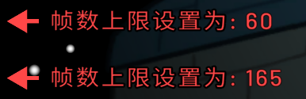
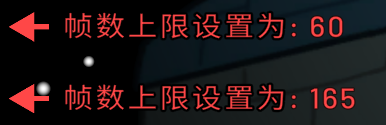

原版遊戲用戶端預設將幀率限制在60FPS，啟用此功能後可解除此限制，最高支援165FPS的流暢畫面表現。
高幀率模式能顯著提升遊戲動畫的順滑度和操作響應速度。
FinalSuspect
解鎖幀數限制
解鎖幀數限制功能示意圖：
原版遊戲用戶端預設將幀率限制在60FPS，啟用此功能後可解除此限制，最高支援165FPS的流暢畫面表現。
高幀率模式能顯著提升遊戲動畫的順滑度和操作響應速度。
解鎖幀數限制功能示意圖：
